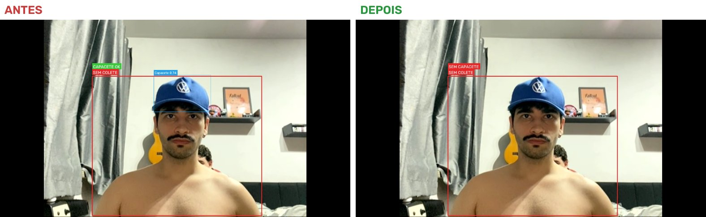
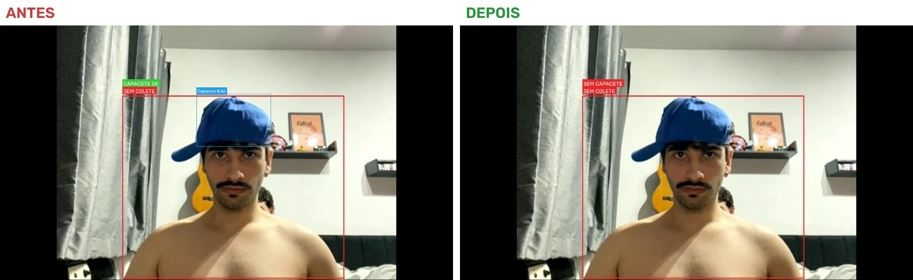
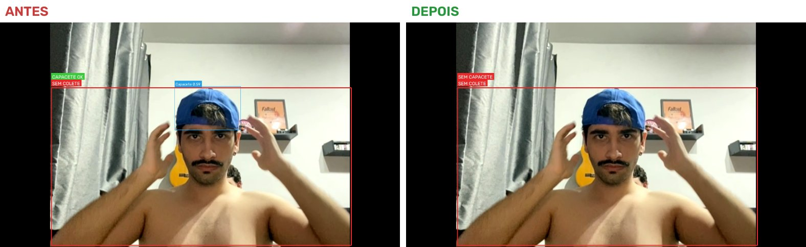
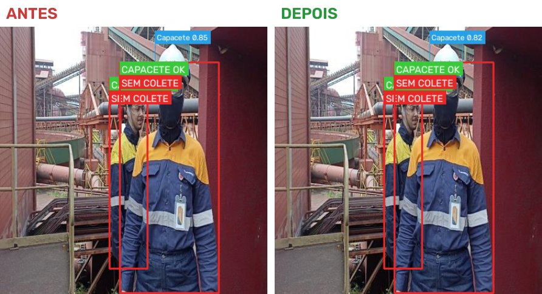
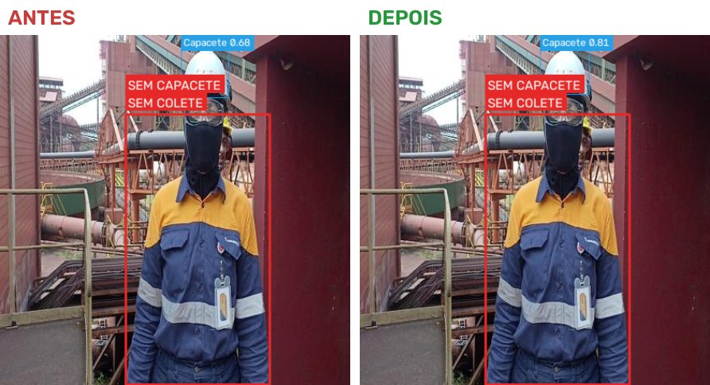
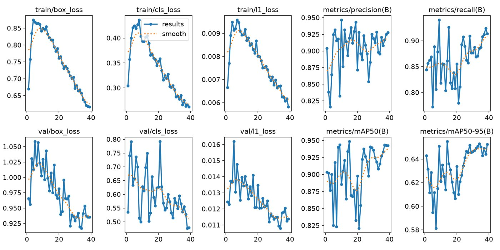
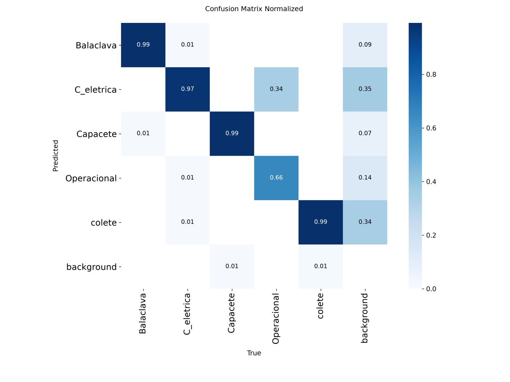

O modelo foi treinado de novo com o dataset original e fotos de pessoas de boné, para parar de aceitar boné como capacete. Este relatório compara o modelo antigo (epi_backup.pt) com o novo (epi.pt) nas mesmas imagens de validação.
Data 26/11/2026GPU RTX 5060Duração 17 minÉpocas 39 de 50 (melhor na 14)
Boné confundido com capacete
140de 47 fotos de boné
Nas fotos de boné separadas para validação (que o modelo não viu no treino), o modelo antigo marcava capacete em 30% delas. O novo não marca em nenhuma.
Antes · 14 erros
Depois · 0 erros
Capacete e colete
São as duas classes que o detector usa. A precisão do capacete subiu bastante, o que significa menos alarmes falsos. Era exatamente o problema do boné.
AntesDepois
Antes e depois nas imagens
Mesmas fotos, mesmo programa (detectar_epi.py), só trocando o modelo. Caixa vermelha: falta EPI. Rótulo verde: EPI encontrado.

Boné azul. Antes o modelo via um capacete com 74% de confiança e liberava a pessoa. Depois marca corretamente "SEM CAPACETE".

Outra foto de boné: o falso capacete some.

Terceira foto de boné, mesmo resultado.

Capacete de verdade continua sendo reconhecido (0.85 antes, 0.82 depois).

A confiança no capacete subiu (0.68 → 0.81). Nas duas versões aparece "SEM CAPACETE" porque a caixa da pessoa começa abaixo do capacete, e ele fica fora da região da cabeça. Isso vem da regra de posição do detector, não do modelo.
Métricas gerais
Médias das 5 classes do modelo, incluindo as que o detector não usa. Ficaram praticamente estáveis.
Métrica
Antes
Depois
Diferença
Todas as classes
Classe
Objetos
Precisão
Recall
mAP50
mAP50-95
Δ mAP50-95
Balaclava, C_eletrica e Operacional ficam desligadas no detector e não aparecem na tela.
O que foi feito
Coleta das fotos de boné
Com o coletar_bones.py: 239 fotos de pessoas de boné, sem rótulo de capacete. 192 foram para o treino e 47 ficaram separadas para validação.
Junção com o dataset original
O treino usou as 1272 imagens do dataset epi-d4clr (Roboflow) mais as 192 de boné: 1464 imagens. Validação com 276 + 47 = 323 imagens.
Treino a partir do modelo atual
Começou dos pesos do modelo antigo, em vez do zero. Pedidas 50 épocas; o treino parou sozinho na 39 porque passou 25 épocas sem melhorar. O melhor resultado foi o da época 14.
Troca do modelo
O novo virou modelos/epi.pt. O antigo continua em modelos/epi_backup.pt para voltar se precisar.
Gráficos do treino

Loss e métricas por época. A loss de treino cai o tempo todo; as métricas de validação estabilizam cedo.

Matriz de confusão: o que o modelo confunde com o quê. A coluna "background" mostra detecções que não existiam.
Pontos de atenção
O colete perdeu um pouco de mAP50-95 (0.875 → 0.826): as caixas ficaram menos justas. A precisão e o recall dele quase não mudaram, então na prática ele continua sendo encontrado.
O recall do capacete caiu de 1.000 para 0.982: de cada 100 capacetes reais, cerca de 2 deixam de ser vistos numa foto isolada. No vídeo isso pesa menos, porque o alerta só dispara depois de vários frames seguidos.
Quando a pessoa é detectada cortada (caixa começando no rosto), o capacete pode ficar fora da região da cabeça e o detector marca "SEM CAPACETE" mesmo com o capacete encontrado. Aparece na segunda foto de capacete acima.
As 47 fotos de boné de validação foram coletadas do mesmo jeito que as do treino, com poucas pessoas e bonés. Vale testar ao vivo com outros bonés e outras pessoas antes da apresentação.